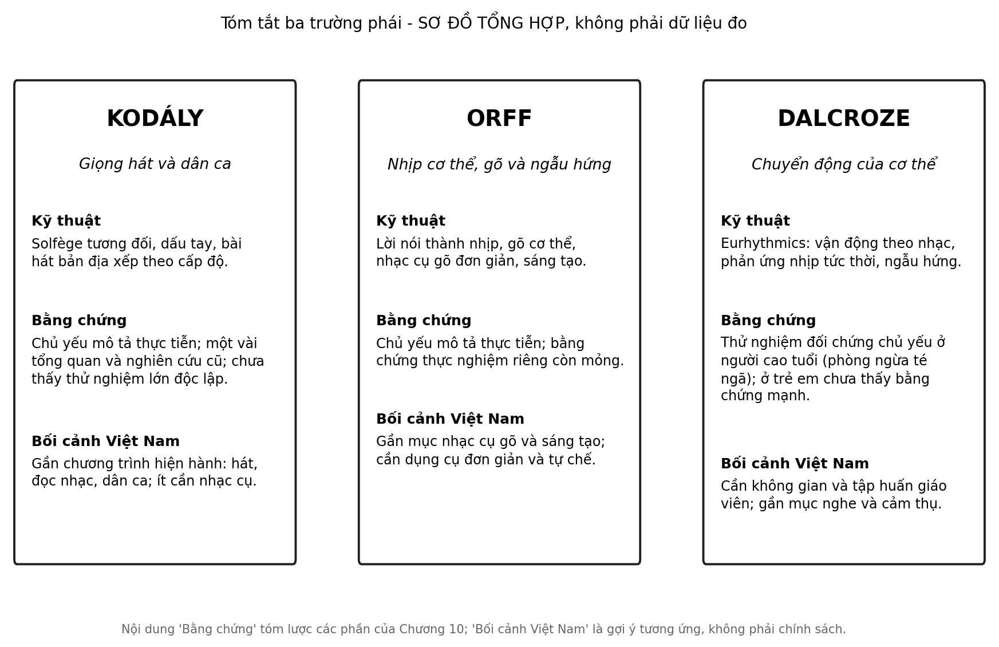

10 Ba trường phái, một lớp học
Trong một buổi tập huấn, ba giáo viên được yêu cầu dạy cùng một bài hát ngắn cho một nhóm học sinh. Cô thứ nhất cho các em hát, đưa tay lên xuống theo cao độ. Thầy thứ hai cho cả nhóm vỗ đùi, vỗ tay và gõ lên những ống tre. Cô thứ ba cho các em đi, dừng lại và đổi hướng theo nhịp. Cả ba đều tự tin, cả ba đều nói phương pháp của mình là tốt nhất. Họ nên tin ai?
Câu hỏi trung tâm
Ba phương pháp dạy nhạc cho trẻ nổi tiếng thế giới, Kodály, Orff và Dalcroze, khác nhau ở đâu, bằng chứng cho từng phương pháp đến đâu, và trong khung chương trình Việt Nam hiện hành, điều gì thực tế? Chương này không chọn người thắng. Nó mô tả từng phương pháp bằng chính lời của những người đã xây dựng chúng, nói rõ bằng chứng thực nghiệm mỏng hay dày ở đâu, và đối chiếu với chương trình môn Âm nhạc năm 2018 và với những điều kiện thật của một lớp học.
Chương đi theo năm bước: mô tả ba phương pháp, xem bằng chứng cho từng phương pháp, đối chiếu với chương trình Việt Nam, bàn về một lớp học thật, và một ví dụ bài học dùng cả ba cửa ngõ. Hoạt động cuối chương cho cả lớp trải nghiệm một bài hát qua ba cách.
Ba thuật ngữ nền
Phương pháp (method) ở đây chỉ một hệ thống dạy học có triết lý, trình tự và kỹ thuật riêng, được truyền lại qua sách, lớp tập huấn và các thế hệ giáo viên. Chương trình (curriculum) là những gì nhà trường phải dạy theo quy định, và một chương trình có thể dùng nhiều phương pháp. Nhập khẩu nguyên gói là việc đưa một phương pháp từ nơi khác vào một bối cảnh mới mà không điều chỉnh, và chúng ta sẽ thấy vì sao điều đó thường là một sai lầm.
Cách đọc chương này
Mỗi phương pháp có hai loại tài liệu: tài liệu của những người sáng lập và thực hành, mô tả cách dạy; và tài liệu nghiên cứu, hỏi liệu cách dạy ấy có tạo ra điều nó hứa. Hai loại này có mức bằng chứng khác nhau, và việc trộn chúng gây nhiều hiểu lầm. Chúng ta sẽ đi theo bốn bước: mô tả ba phương pháp; xem bằng chứng; đối chiếu với chương trình Việt Nam; và thảo luận về điều có thể làm được trong một lớp học thật.
1. Ba phương pháp là gì
Kodály là tên của nhà soạn nhạc và nhà dân tộc nhạc học người Hung-ga-ri Zoltán Kodály, người cho rằng giáo dục âm nhạc nên bắt đầu sớm, lấy giọng hát làm nhạc cụ đầu tiên, và dùng dân ca của chính văn hóa của trẻ làm chất liệu Thực tiễn sư phạm (Kodály, 1974). Những người tiếp nối đã xây dựng thành một phương pháp có trình tự: solfège tương đối (hệ do-rê-mi di động, trong đó tên nốt chỉ vị trí trong thang âm chứ không gắn với một cao độ cố định), dấu tay chỉ cao độ, và các bài hát được xếp theo cấp độ khó dần (Choksy, 1999; Szőnyi, 1973). Một điểm đáng chú ý với bối cảnh Việt Nam là yêu cầu về chất liệu bản địa: phương pháp gốc không nói “dạy bài hát Hung-ga-ri” mà nói “dạy bằng dân ca của chính trẻ”.
Trình tự trong lớp Kodály thường đi từ hát, đến nhận ra và gọi tên những gì đã hát, rồi mới đến đọc và viết ký hiệu. Nghĩa là ký hiệu đến sau trải nghiệm, một nguyên tắc mà các phương pháp còn lại cũng chia sẻ. Cũng cần nói rằng “Kodály” trong lớp học ngày nay thường là một hệ kỹ thuật do những người tiếp nối xây dựng, và chính Kodály chủ yếu viết về nguyên tắc chứ không viết một giáo trình hoàn chỉnh.
Orff là tên của nhà soạn nhạc người Đức Carl Orff và cộng sự Gunild Keetman, những người xây dựng “Schulwerk”, một cách dạy xuất phát từ lời nói, vần điệu và chuyển động. Trẻ bắt đầu bằng đọc nhịp những từ và câu, rồi vỗ, dậm, gõ lên cơ thể, rồi chuyển sang các nhạc cụ gõ đơn giản như mộc cầm, thiết cầm và các loại trống nhỏ, và cuối cùng ngẫu hứng và sáng tạo Thực tiễn sư phạm (Frazee, 2006; Shamrock, 1997). Điểm đặc trưng là học bằng làm, theo nhóm, và sáng tạo từ rất sớm.
Khái niệm trung tâm là âm nhạc “cơ bản” (elemental): âm nhạc gắn với chuyển động, lời nói và trò chơi, mà trẻ có thể tham gia tạo ra chứ không chỉ nghe. Các nhạc cụ Orff được thiết kế để người mới bắt đầu có thể chơi hay ngay, chẳng hạn bằng cách bỏ những thanh nốt gây va chạm âm để cả lớp ngẫu hứng cùng nhau mà không nghe lạc. Điều này làm Orff đặc biệt thuận tiện cho lớp đông, dù các nhạc cụ chuẩn có chi phí không nhỏ.
Dalcroze là tên của nhà soạn nhạc và nhà sư phạm người Thụy Sĩ Émile Jaques-Dalcroze, người tin rằng nhịp phải được trải nghiệm bằng cơ thể trước khi được hiểu bằng đầu. Phương pháp của ông, eurhythmics, cho học sinh vận động theo nhạc, phản ứng tức thời với thay đổi về nhịp và nhạc, và kết hợp với nghe và ngẫu hứng Thực tiễn sư phạm (Jaques-Dalcroze, 1921; Mead, 1994).
Eurhythmics thường được mô tả cùng hai thành phần khác, luyện tai và ngẫu hứng, và cả ba hợp lại trong một lớp học Dalcroze đầy đủ. Một đặc điểm đáng chú ý là học sinh phản ứng với âm nhạc trực tiếp bằng cơ thể, thường với một nhạc công ngẫu hứng biểu diễn trực tiếp và thay đổi nhịp, tốc độ hay cường độ bất ngờ. Phương pháp Suzuki, tập trung vào học nhạc cụ bằng cách nghe và bắt chước từ rất nhỏ, cũng nổi tiếng nhưng nằm ngoài phạm vi chương này.
Ba phương pháp có một số điểm chung: bắt đầu từ trải nghiệm trước ký hiệu, dùng chuyển động và giọng nói, và coi âm nhạc là điều học bằng cách làm. Chúng khác nhau ở cổng vào: giọng hát và dân ca, gõ và ngẫu hứng, hay chuyển động của cơ thể. Một nguồn tổng hợp mô tả cách các giáo viên ở nhiều nước đã kết hợp những yếu tố của cả ba thành một cách tiếp cận chiết trung (Landis & Carder, 1972). Ở đây có một sự thật quan trọng: phần lớn giáo viên thực tế không theo một phương pháp thuần mà lấy từ nhiều nơi.
2. Bằng chứng cho từng phương pháp
Câu hỏi quan trọng là các phương pháp này có làm trẻ học tốt hơn không, và hơn so với cái gì. Câu trả lời ngắn là: tài liệu mô tả rất nhiều, bằng chứng thực nghiệm đối chứng thì ít hơn nhiều, và bằng chứng mạnh cho riêng từng phương pháp ở trẻ em còn hiếm.
Với Kodály, chúng ta tìm thấy một nghiên cứu cũ về các lớp tiểu học dùng chương trình Kodály, báo cáo kết quả ở cả kỹ năng ngoài âm nhạc Sơ bộ (Hurwitz và c.s., 1975). Chúng ta chưa đọc kỹ thiết kế và kích thước hiệu ứng, và nghiên cứu này từ nửa thế kỷ trước, nên chỉ nêu nó như một điểm khởi đầu cần kiểm tra. Một tổng quan có hệ thống gần đây về các phương pháp Kodály, Orff và Suzuki, gộp các nghiên cứu công bố trong khoảng một thập kỷ, báo cáo kết quả tích cực về kỹ năng âm nhạc, đọc viết và sáng tạo Sơ bộ (Jiang, 2025). Chúng ta chỉ đọc phần tóm tắt, nên chưa biết chất lượng của các nghiên cứu được gộp; một tổng quan có hệ thống chỉ mạnh bằng các nghiên cứu nằm trong nó.
Với Orff, chúng ta không tìm thấy thử nghiệm đối chứng lớn riêng cho phương pháp, và phần lớn tài liệu là mô tả thực hành (Shamrock, 1997). Điều này không có nghĩa phương pháp vô hiệu, mà có nghĩa là chúng ta không có cơ sở thực nghiệm để nói nó hiệu quả hơn các lựa chọn khác.
Với Dalcroze, bằng chứng mạnh nhất không nằm ở trẻ em. Một thử nghiệm đối chứng ngẫu nhiên ở người cao tuổi cho thấy chương trình rèn luyện vận động theo nhạc, xây dựng trên các nguyên tắc của Dalcroze, làm giảm số lần té ngã so với nhóm đối chứng Sơ bộ (Trombetti và c.s., 2011). Một bài sau đó trích mức giảm vào khoảng một nửa số lần té ngã; chúng ta chưa đọc bài gốc để xác nhận con số. Đây là một kết quả đáng quan tâm cho sức khỏe người cao tuổi, và không thể mang sang lớp học tiểu học: dân số, mục tiêu và thước đo khác hẳn.
Một tổng quan nhiều năm về sức mạnh của âm nhạc đối với sự phát triển trí tuệ, xã hội và cá nhân của trẻ nêu nhiều lợi ích tiềm năng Sơ bộ (Hallam, 2010). Đây là một tổng quan tường thuật, không phải một tổng hợp phân tích, và các kết luận cần được đối chiếu với bằng chứng chặt chẽ hơn.
Bằng chứng chặt chẽ hơn, ở cấp độ chung chứ không riêng cho phương pháp nào, cho thấy gì? Như ở Chương 7, tổng hợp phân tích lớn nhất về luyện âm nhạc ở trẻ em, gộp 54 nghiên cứu với 6.984 trẻ, thấy tác động chung lên nhận thức và thành tích học tập gần bằng không khi thiết kế được kiểm soát Trung bình (Sala & Gobet, 2017, 2020). Một tổng quan khác cho rằng luyện nhạc đem lại chuyển giao gần, còn chuyển giao xa bị tranh luận Giả thuyết (Bigand & Tillmann, 2022). Điều này không loại trừ rằng ba phương pháp có thể dạy âm nhạc rất tốt; nó chỉ có nghĩa là bằng chứng cho lợi ích ngoài âm nhạc rất yếu.
Từ đó chúng ta có thể giữ lại một mệnh đề thận trọng: âm nhạc không thay thế kiến thức; nó có thể mở đường cho một số dạng học. Trong chương này, mệnh đề giải mã thành ba điều. Một phương pháp tốt là một cách dạy âm nhạc, và giá trị chính của nó là dạy âm nhạc: hát, chơi, nghe, sáng tạo. Lợi ích ngoài âm nhạc, nếu có, nhỏ và cần được chỉ ra tường minh. Và vì vậy lý do hợp lý để chọn một phương pháp là nó dạy âm nhạc tốt trong điều kiện của bạn, không phải lời hứa làm trẻ giỏi môn khác.
Cũng cần một lưu ý phương pháp. Các phương pháp là “gói”: chúng đi cùng giáo viên được đào tạo, thời gian lớp, tài liệu và sự nhiệt tình của người triển khai. Khi một chương trình dùng Kodály hay Orff cho kết quả tốt, ta khó biết phần nào đến từ phương pháp, phần nào đến từ những điều kiện đi kèm. Hơn nữa, các gia đình và nhà trường chọn một phương pháp thường đã khác nhau từ trước, một vấn đề chọn lọc tương tự như ở Chương 7 Giả thuyết (Schellenberg, 2020).
Có một thước đo giúp đặt mọi con số vào đúng tỷ lệ. Một đề xuất thường được trích để diễn giải hiệu ứng trong giáo dục xem hiệu ứng nhỏ hơn 0,05 là nhỏ và lớn hơn 0,20 là lớn khi đo thành tích chuẩn hóa trong thử nghiệm nhân quả (Kraft, 2020). Nếu một báo cáo về một phương pháp nêu một hiệu ứng lớn hơn nhiều so với mức ấy, đặc biệt trong một mẫu nhỏ hay không có nhóm đối chứng hoạt động, hãy nghi ngờ trước khi vui mừng.
Khi đọc bất kỳ nghiên cứu nào về một phương pháp dạy nhạc, bạn có thể dùng năm câu hỏi. Trẻ nào tham gia và ở đâu? So sánh với nhóm nào, và nhóm ấy có làm một hoạt động hấp dẫn tương đương không? Kết quả đo là âm nhạc hay thứ khác, ngay sau chương trình hay lâu hơn? Hiệu ứng lớn bao nhiêu và có được lặp lại bởi nhóm độc lập không? Và ai thực hiện chương trình: chính những người sáng lập, hay những giáo viên bình thường? Một nghiên cứu trả lời tốt cả năm câu hiếm khi đến từ phần quảng cáo của một phương pháp.
3. Chương trình môn Âm nhạc năm 2018 của Việt Nam
Để đối chiếu, cần biết chương trình hiện hành nói gì. Theo các tóm tắt chúng ta đọc, chương trình môn Âm nhạc nằm trong Chương trình giáo dục phổ thông ban hành kèm Thông tư số 32/2018/TT-BGDĐT. Âm nhạc là môn học bắt buộc ở giáo dục cơ bản từ lớp Một đến lớp Chín và là nội dung lựa chọn ở bậc trung học phổ thông (Bộ Giáo dục và Đào tạo, 2018). Nội dung được tổ chức xoay quanh một số mạch gồm hát, nghe nhạc, đọc nhạc, nhạc cụ, lý thuyết âm nhạc và thường thức âm nhạc. Hát giữ vai trò quan trọng và gồm cả dân ca Việt Nam; nhạc cụ gõ được dạy cho mọi học sinh, còn nhạc cụ giai điệu là nội dung lựa chọn. Chương trình nhắm đến ba năng lực: thể hiện âm nhạc, cảm thụ và hiểu biết âm nhạc, và ứng dụng và sáng tạo âm nhạc (Nguyễn & Nguyễn, 2022).
Chúng ta nên nói rõ giới hạn của phần này. Chúng ta đọc các tóm tắt thứ cấp của chương trình và một bài báo về dạy ký xướng âm theo hướng cảm thụ, chứ chưa đọc toàn văn Thông tư. Vì vậy mô tả trên chỉ là những nét lớn, và bất kỳ ai áp dụng vào trường mình nên đọc văn bản gốc. Bài báo vừa nhắc cũng cho thấy một điều đáng chú ý: việc dạy cảm thụ âm nhạc còn là một chủ đề cần thêm nghiên cứu ở Việt Nam (Nguyễn & Nguyễn, 2022).
Từ các nét lớn ấy có thể thấy những tương ứng, không phải tương đương. Mạch hát, dân ca và đọc nhạc gần với tinh thần Kodály ở chỗ coi giọng hát và chất liệu bản địa là nền tảng. Mạch nhạc cụ gõ và sáng tạo gần với tinh thần Orff ở chỗ dùng dụng cụ đơn giản và học qua làm. Mạch nghe và cảm thụ có thể dùng chuyển động theo tinh thần Dalcroze, dù chương trình không đòi hỏi điều đó. Cần nhấn mạnh rằng chương trình không chọn một trong ba phương pháp, và chúng ta không có cơ sở để nói rằng một phương pháp nào “phù hợp nhất” với chương trình Việt Nam. Đó là sự tương ứng về tinh thần, không phải chính sách.
| Mạch của chương trình | Cửa ngõ nào có thể phục vụ | Kỹ thuật gần như không tốn kém |
|---|---|---|
| Hát (gồm dân ca) | Kodály | dấu tay chỉ cao độ; hát bài địa phương |
| Nhạc cụ gõ | Orff | vỗ tay, vỗ đùi, dụng cụ tự chế |
| Nghe nhạc và cảm thụ | Dalcroze | di chuyển tại chỗ, đổi hướng theo nhịp |
| Đọc nhạc và lý thuyết | Kodály | solfège tương đối, đọc nhịp bằng lời |
Bảng này là một gợi ý để suy nghĩ, không phải bảng tuân thủ. Cách ghép như vậy giúp một giáo viên thấy rằng ba phương pháp không loại trừ nhau và không cần một phương tiện đặc biệt để thử.
Chúng ta cũng không tìm thấy nghiên cứu thực nghiệm nào đánh giá việc dùng riêng từng phương pháp Kodály, Orff hay Dalcroze trong lớp học Việt Nam. Hiện chưa có dữ liệu đủ lớn ở Việt Nam về điều này; đây là hướng nghiên cứu ưu tiên. Như ở các chương trước, chúng ta nhắc lại rằng các tìm kiếm phục vụ chương này chưa bao gồm một cách hệ thống các tạp chí và cơ sở dữ liệu trong nước, nên không loại trừ khả năng có nghiên cứu bị bỏ sót.
4. Một lớp học thật: điều kiện, bản địa và nhiều cửa ngõ
Một lớp học Việt Nam thường khác bối cảnh nơi các phương pháp này được sinh ra: lớp đông, phòng học đa dụng, thời lượng ngắn, ít nhạc cụ, và giáo viên có thể phải dạy nhiều lớp. Những điều kiện ấy quyết định điều gì khả thi nhiều hơn là việc phương pháp nào “tốt nhất”. Một cách nghĩ thực tế là hỏi: kỹ thuật nào của mỗi phương pháp gần như không tốn gì, và có thể dùng được ngay?
Từ Kodály, dấu tay chỉ cao độ không tốn gì và cho cả lớp một cách nhìn thấy cao độ, và việc dùng dân ca địa phương nối lớp học với đời sống của các em. Từ Orff, vỗ tay, vỗ đùi, dậm chân và đọc nhịp lời nói không cần nhạc cụ, và các dụng cụ gõ đơn giản có thể tự làm từ ống tre, hộp và hạt. Từ Dalcroze, vận động theo nhạc cần một khoảng trống, nhưng ngay cả trong lớp đông, các em có thể di chuyển tại chỗ, đổi hướng hay dùng tay. Đây là những gợi ý thực dụng, không phải triển khai đầy đủ của từng phương pháp, vốn cần tập huấn.
Với một giáo viên mới bắt đầu, một “bộ tối thiểu” có thể gồm ba thứ. Một là vài bài dân ca hoặc đồng dao của địa phương mà thầy cô thuộc và có thể hát to rõ. Hai là bốn năm kiểu vỗ tay và vỗ đùi đơn giản để làm nền nhịp. Ba là một lối chuyển động an toàn trong lớp đông, chẳng hạn đi tại chỗ hoặc đổi hướng bằng tay. Chúng ta không có số liệu về điều kiện của các trường ở Việt Nam trong chương này, và các điều kiện ấy khác nhau nhiều giữa trường và vùng; bộ tối thiểu chỉ là điểm xuất phát để điều chỉnh.
Về bản địa, một điểm đáng chú ý là các phương pháp lớn đều từng được điều chỉnh khi đến một nền văn hóa mới. Một tài liệu về dạy học âm nhạc xuyên văn hóa lập luận rằng việc đưa âm nhạc của nhiều cộng đồng vào lớp học đòi hỏi sự tôn trọng bối cảnh và sự tham gia của những người mang truyền thống ấy, không chỉ việc thêm một vài bài hát Giả thuyết (Campbell, 1991). Với Việt Nam, điều này gợi ý rằng dân ca, hát ru và đồng dao của chính từng địa phương là chất liệu có giá trị, và việc nhập khẩu nguyên gói một phương pháp cùng bài hát của nơi khác là một lựa chọn kém hơn.
Từ đây chúng ta có thể giữ lại tư thế sư phạm ở Chương 9: không có đứa trẻ “vô cảm” với âm thanh; chỉ có những cửa ngõ chưa được mở đúng cách. Câu này là một lập trường về cách dạy, không phải một kết luận khoa học. Nó nói rằng ba phương pháp, hát với dấu tay, gõ và nhịp cơ thể, và chuyển động, có thể được hiểu như ba cửa ngõ khác nhau vào cùng một bài hát, và rằng nếu một em chưa đáp lại cửa này, người dạy có thể thử cửa khác. Nó không nói rằng mỗi em có một “kiểu học” cố định cần được xác định; chúng ta không có bằng chứng như vậy. Và nó không phủ nhận rằng một số em cần hỗ trợ chuyên môn.
Cách đánh giá cũng nên phù hợp. Nếu mục đích của một phương pháp là dạy âm nhạc, thì thước đo hợp lý là những điều thuộc về âm nhạc: các em có hát đúng giai điệu, giữ được nhịp, nghe ra sự khác nhau, sáng tạo một đoạn ngắn không. Đánh giá một chương trình dạy nhạc bằng điểm toán hay đọc là đặt nó vào một cuộc thi mà bằng chứng ở Chương 7 cho thấy nó khó thắng, và cũng không công bằng với nó.
Một nghiên cứu khả thi và ít tốn kém ở Việt Nam là một nghiên cứu triển khai nhỏ: một giáo viên dạy cùng một bài hát cho các nhóm khác nhau qua một trong ba cửa ngõ, rồi ghi lại mức tham gia, sự thích thú và việc nhớ bài, bằng thang quan sát đơn giản, không chấm điểm các em. Kết quả không chứng tỏ phương pháp nào tốt hơn, nhưng cho giáo viên thông tin về chính lớp mình. Nghiên cứu như vậy cần sự đồng ý của nhà trường và gia đình, và nên chia sẻ cả kết quả không như mong đợi.
5. Một tuần với một bài hát: ví dụ minh họa
Để cụ thể hóa, đây là một kế hoạch mẫu cho một tuần, mỗi ngày mười lăm phút, với một bài dân ca hay đồng dao địa phương mà giáo viên thuộc. Chúng ta nhấn mạnh rằng đây là một ví dụ minh họa, không phải một chương trình đã được kiểm chứng.
Ngày thứ nhất, cả lớp nghe và hát bài, không có kỹ thuật nào ngoài việc hát cùng nhau và nói về điều bài hát kể. Mục đích là thuộc bài và thích bài. Ngày thứ hai, theo tinh thần Kodály, cả lớp hát lại và đưa tay lên xuống theo giai điệu; cô chỉ vào một vài nốt cao hoặc thấp rõ rệt và hỏi các em nghe thấy chỗ nào đi lên, chỗ nào đi xuống. Ngày thứ ba, theo tinh thần Orff, cả lớp đọc lời theo nhịp, vỗ phách, rồi một nhóm gõ nhịp bằng vật gõ trong khi nhóm kia hát. Ngày thứ tư, theo tinh thần Dalcroze, cả lớp đi theo phách, đổi hướng khi cô dừng một nhịp và dừng hẳn khi bài kết thúc. Ngày thứ năm, các em tự chọn một cửa ngõ và cùng thử sáng tạo, chẳng hạn đổi một từ trong lời hoặc thêm một mô-típ gõ mới.
Về đánh giá, giáo viên có thể ghi ba điều ở cấp lớp: các em có hát được giai điệu chính không, giữ phách khá đều không, và tham gia hoạt động sáng tạo không. Ba điều ấy thuộc về âm nhạc, nên phù hợp với mục đích. Nếu muốn so sánh các cửa ngõ, giáo viên có thể ghi mức tham gia trong mỗi ngày bằng một thang đơn giản, chẳng hạn quan sát mức hào hứng của lớp theo ba mức, và nhớ rằng đó là cảm nhận của người quan sát chứ không phải một đo lường chuẩn.
Với từng điều chỉnh, ví dụ lớp rất đông thì chia hoạt động của ngày thứ ba thành hai vòng, mỗi vòng một nửa lớp; lớp học hẹp thì chuyển động ở ngày thứ tư thành động tác tay và nhịp thân trên; một em ngần ngại hát thì cho em giữ nhịp. Giáo viên cũng có thể đổi thứ tự các ngày theo nhu cầu của lớp. Kế hoạch mẫu này là một thực hành hợp lý và chưa được thử nghiệm đối chứng; chúng ta mô tả nó để người đọc có điểm xuất phát chứ không để áp dụng nguyên văn Thực tiễn sư phạm.
6. Những câu hỏi thường gặp
Giáo viên và phụ huynh thường hỏi một số câu giống nhau. Chúng ta trả lời ngắn gọn, và ghi rõ chỗ nào là bằng chứng, chỗ nào là suy luận.
Nên chọn phương pháp nào? Chúng ta không có bằng chứng để nói phương pháp nào tốt hơn cho trẻ Việt. Cách chọn hợp lý là bắt đầu từ điều kiện của bạn: nếu bạn thuộc nhiều dân ca và thích hát, cửa ngõ giọng hát và dân ca có thể là điểm khởi đầu tự nhiên; nếu lớp thích vận động, cửa ngõ chuyển động. Đây là suy luận thực tế, không phải kết quả nghiên cứu Thực tiễn sư phạm.
Có cần mua nhạc cụ không? Không bắt buộc để bắt đầu. Giọng hát, vỗ tay, vỗ đùi và chuyển động không tốn gì, và nhiều dụng cụ gõ có thể tự làm. Nhạc cụ chuẩn, như các loại thiết cầm và mộc cầm của Orff, có thể giúp ích nhưng không phải điều kiện đầu tiên.
Có cần tập huấn không? Việc tập huấn đầy đủ một phương pháp có thể rất giá trị vì phương pháp có trình tự và kỹ thuật tinh tế, và chúng ta không nói rằng việc tự thử thay thế được nó. Nhưng một giáo viên vẫn có thể bắt đầu với một vài kỹ thuật đơn giản, miễn là hiểu đó là điểm xuất phát chứ không phải toàn bộ phương pháp.
Em không thích hát thì sao? Có nhiều lý do khiến một em ngại hát, từ ngại bị chú ý đến vừa qua giai đoạn đổi giọng. Cho em quyền tham gia theo cách khác, như gõ nhịp, đếm hay quan sát, thường tốt hơn là ép em hát. Điều này phù hợp với tư thế ở Chương 9 về nhiều cửa ngõ, và chúng ta không có bằng chứng riêng cho việc ép hay không ép.
Một phương pháp có chứng nhận quốc tế có đáng tin hơn không? Chứng nhận cho biết một người đã được đào tạo theo một chuẩn của một tổ chức; nó không cho biết phương pháp ấy hiệu quả hơn các cách dạy khác trong điều kiện của bạn. Hai điều ấy khác nhau, và việc phân biệt chúng giúp tránh quyết định dựa trên uy tín thay vì bằng chứng.
Học sinh học nhạc theo phương pháp này có giỏi hơn các môn khác không? Như ở các chương trước, bằng chứng chặt chẽ cho thấy tác động chung lên nhận thức và thành tích học tập gần bằng không khi thiết kế được kiểm soát Trung bình (Sala & Gobet, 2020). Giá trị của việc học nhạc nằm ở chính âm nhạc, và đó là một lý do đủ.
Cơ chế và bằng chứng chính
| Phát biểu | Mức | Nguồn chính | Điều kiện / giới hạn |
|---|---|---|---|
| Mô tả ba phương pháp: giọng hát và dân ca (Kodály), nhịp cơ thể và gõ (Orff), chuyển động (Dalcroze) | Thực tiễn sư phạm | (Jaques-Dalcroze, 1921; Kodály, 1974; Shamrock, 1997) | tài liệu mô tả của người sáng lập và thực hành |
| Kodály: kết quả tích cực trong tổng quan và nghiên cứu cũ | Sơ bộ | (Hurwitz và c.s., 1975; Jiang, 2025) | chưa đọc toàn văn; chất lượng nghiên cứu chưa rõ |
| Orff: chưa có thử nghiệm đối chứng riêng | Thực tiễn sư phạm | (Shamrock, 1997) | tài liệu chủ yếu mô tả |
| Dalcroze: giảm té ngã ở người cao tuổi | Sơ bộ | (Trombetti và c.s., 2011) | một thử nghiệm ở người cao tuổi; không áp dụng cho trẻ em |
| Luyện nhạc nói chung không cải thiện nhận thức chung khi kiểm soát thiết kế | Trung bình | (Sala & Gobet, 2017, 2020) | không riêng cho phương pháp nào |
| Chương trình môn Âm nhạc 2018: hát, dân ca, nhạc cụ gõ, đọc nhạc | Chính sách | (Bộ Giáo dục và Đào tạo, 2018; Nguyễn & Nguyễn, 2022) | tóm tắt thứ cấp, chưa đọc toàn văn |
| Dùng riêng từng phương pháp trong lớp học Việt Nam | Thực tiễn sư phạm | không có thử nghiệm | khoảng trống dữ liệu |

Ứng dụng trong lớp học và gia đình Việt Nam
Mục tiêu: Cho học sinh trải nghiệm cùng một bài hát qua ba cửa ngõ: giọng hát với dấu tay, nhịp cơ thể với dụng cụ gõ đơn giản, và chuyển động, rồi quan sát và so sánh mức tham gia.
Chuẩn bị: Một bài hát ngắn, quen thuộc với các em, nên là một bài dân ca hoặc đồng dao địa phương mà giáo viên thuộc. Có thể có một hai vật gõ tự chế như ống tre, hộp hay hai chiếc đũa. Một khoảng trống nhỏ để di chuyển.
Thời gian: 15 phút.
Các bước:
- Cửa ngõ thứ nhất, khoảng bốn phút: cả lớp hát bài, và cô dùng một bàn tay chỉ cao độ lên xuống theo giai điệu. Các em thử đưa tay theo cô.
- Cửa ngõ thứ hai, khoảng bốn phút: cả lớp đọc lời bài hát theo nhịp, vỗ tay và vỗ đùi theo phách, rồi một nhóm nhỏ gõ nhịp bằng vật gõ trong khi các em còn lại hát.
- Cửa ngõ thứ ba, khoảng bốn phút: cả lớp đi tại chỗ hoặc di chuyển nhẹ theo phách, đổi hướng mỗi khi cô dừng một nhịp, và dừng lại khi bài kết thúc.
- Khoảng ba phút cuối: mỗi em giơ tay cho cửa ngõ mà em thích nhất hoặc thấy dễ nhất. Giáo viên ghi lại sự phân bố ở cấp lớp.
- Thảo luận ngắn: các em có thấy bài hát khác nhau ở mỗi cửa ngõ không, và điều gì làm các em thích hay khó.
Quan sát gì: Cửa ngõ nào nhiều em tham gia, cửa ngõ nào có em nào ngần ngại, và các em mô tả điều khác biệt thế nào. Không chấm điểm hay xếp loại các em.
Biến thể: Mầm non: mỗi cửa ngõ chỉ khoảng hai phút, với bài hát một hai câu. Tiểu học: chọn một cửa ngõ để đào sâu thêm ở buổi sau. THCS: so sánh ba cách với một bài dân ca của địa phương và thảo luận khác biệt. Gia đình: thử ba cách với một bài hát ru quen thuộc.
Lưu ý: Đây là ba cửa ngõ lấy cảm hứng từ ba phương pháp, không phải triển khai đầy đủ vì những phương pháp ấy cần tập huấn riêng. Không buộc em nào tham gia theo một cách; em ngần ngại có thể quan sát hoặc đếm nhịp. Kiểm tra không gian để di chuyển an toàn và giữ âm lượng gõ ở mức nhỏ.
Mức bằng chứng của hoạt động: Thực tiễn sư phạm. Các phương pháp được mô tả ở mục 1; bằng chứng thực nghiệm cho từng phương pháp được nêu ở mục 2 là mỏng, và chưa có nghiên cứu cho đúng quy trình này ở lớp học Việt Nam.
Giới hạn và lưu ý đạo đức
Chương này dựa trên tài liệu mô tả của những người sáng lập và thực hành, một vài nghiên cứu thực nghiệm mà chúng ta chỉ đọc tóm tắt, và các tổng hợp phân tích rộng về luyện âm nhạc. Chúng ta không có thử nghiệm đối chứng nào riêng cho từng phương pháp ở Việt Nam và không tìm thấy thử nghiệm lớn độc lập ở nơi khác. Mô tả về chương trình năm 2018 dựa trên các tóm tắt thứ cấp, không phải toàn văn.
Cần tính đến chi phí cơ hội và khả năng tiếp cận. Tập huấn đầy đủ một phương pháp tốn thời gian và tiền, mà không phải giáo viên hay trường nào cũng có. Các lớp đông, phòng học hẹp và thời lượng ngắn hạn chế việc dùng vận động và dụng cụ. Với học sinh nhạy cảm với tiếng động, ngại bị chú ý, hoặc có khó khăn về vận động hay thính giác, cần có cách tham gia khác, như quan sát, giữ nhịp thầm hoặc làm người ghi chép. Các phương pháp do người nước ngoài xây dựng cũng cần được điều chỉnh để tôn trọng văn hóa và ngôn ngữ của trẻ; nhập khẩu nguyên gói không phải là cách làm được các tài liệu gốc ủng hộ.
Để tránh hiểu sai, chương này không nói bốn điều. Nó không nói rằng một phương pháp tốt hơn các phương pháp khác. Nó không nói rằng các phương pháp vô hiệu: thiếu bằng chứng thực nghiệm không có nghĩa là bằng chứng của sự vô hiệu. Nó không nói rằng một em có “kiểu học” cố định phù hợp với một phương pháp. Và nó không nói rằng học nhạc theo các phương pháp này làm trẻ giỏi các môn khác. Cuối cùng, chúng ta không đưa ra lời khuyên chính sách; việc áp dụng vào một trường cụ thể thuộc về giáo viên, nhà trường và cộng đồng.
Một ví dụ về một nghiên cứu có trách nhiệm ở đây: một nhóm giáo viên trong cùng một khối lớp thống nhất một bài hát và ba cách dạy, ghi lại mức tham gia và việc nhớ bài của các em bằng thang quan sát chung, rồi họp lại để so sánh ghi chép. Họ không công bố tên em nào, không xếp hạng các em, và xin phép nhà trường và phụ huynh về việc ghi lại. Đó là một nghiên cứu thực hành rất nhỏ, nhưng là loại dữ liệu mà Việt Nam đang thiếu và các giáo viên là những người duy nhất có thể tạo ra.
Tóm tắt chương
- Kodály dùng giọng hát và dân ca bản địa, Orff dùng nhịp cơ thể, gõ và sáng tạo, Dalcroze dùng chuyển động; chúng có điểm chung là học bằng làm Thực tiễn sư phạm (Jaques-Dalcroze, 1921; Kodály, 1974; Shamrock, 1997).
- Bằng chứng thực nghiệm riêng cho từng phương pháp ở trẻ em còn mỏng; Dalcroze có một thử nghiệm ở người cao tuổi về té ngã Sơ bộ (Jiang, 2025; Trombetti và c.s., 2011).
- Ở cấp độ chung, luyện âm nhạc không cải thiện nhận thức chung khi kiểm soát thiết kế; giá trị chính của một phương pháp là dạy âm nhạc tốt Trung bình (Sala & Gobet, 2017, 2020).
- Chương trình môn Âm nhạc 2018 có hát, dân ca, nhạc cụ gõ và đọc nhạc; các phương pháp có thể tương ứng về tinh thần, không phải chính sách (Bộ Giáo dục và Đào tạo, 2018).
- Ba phương pháp có thể được hiểu như ba cửa ngõ vào cùng một bài hát; đây là lập trường sư phạm, chưa được kiểm chứng ở Việt Nam Thực tiễn sư phạm.
Câu hỏi phản tư
Trong lớp hay gia đình của bạn, các em phản ứng thế nào với việc hát, gõ nhịp và di chuyển? Cửa ngõ nào đang được dùng nhiều nhất, cửa ngõ nào gần như chưa mở, và điều bạn quan sát được nằm ở đâu trên thang bằng chứng của chương này?